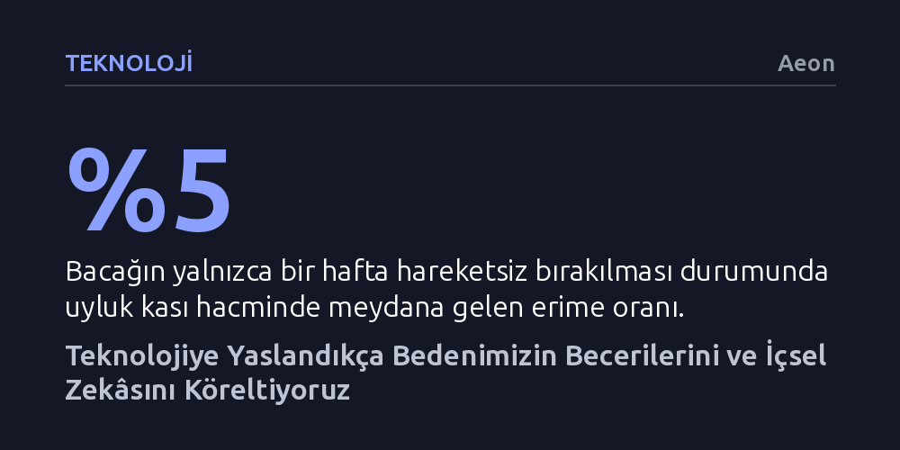

TEKNOLOJI · Aeon · 2026-10-14
Akıllı telefon ve yapay zekâya aşırı yaslanmak, bedensel çabayı devreden çıkararak yön bulma ve yazma gibi temel insani becerileri köreltiyor. Gerçek zekâ soyut algoritmalardan değil, çevreyle etkileşime girip kendini sürekli yenileyen canlı bedenin eylemlerinden doğuyor.
Zekânın bedenden bağımsız bir yazılım değil, doğrudan fiziksel hareket ve çabayla var olan bir süreç olduğunu göstererek teknolojiyle ilişkimizi temelden sorgulatır.

Akıllı telefonlar, GPS uygulamaları ve üretken yapay zekâ araçları günlük hayatın pürüzlerini ortadan kaldırmayı vadediyor; ancak bu pürüzsüzlük bedelini bedensel yetilerimizle ödüyoruz. Sabah gözümüzü açar açmaz ekrana sarılmaktan başlayıp gün boyu sandalyeye çakılı kalmaya uzanan bu döngü, sadece fiziksel bir hareketsizlik yaratmıyor. Çevreyi gözlemleme, yön bulma, hatırlama, derinlemesine odaklanma ve sezgisel tercihler yapma gibi evrimsel süreçte edindiğimiz temel kapasitelerimizi hızla aşındırıyor.
Buradaki kritik ayrım, insan yetilerini geliştiren araçlar ile o yetilerin kazanılmasını sağlayan eylemin doğrudan yerini alan araçlar arasındadır. Örneğin navigasyon cihazları rotayı saniyeler içinde çizse de mekânı kavrama ve yön belirleme akıcılığımızı köreltiyor. Bir yapay zekâ uygulaması bir metnin yapısını bizim yerimize kurduğunda, düşüncelerimizi kelimelere dökme ve hataları fark edip düzeltme kaslarımızı devreden çıkarıyor. Çaba bedenden koparıldığında, beden kendi durumunu değerlendirme, doğaçlama yapma ve kendini düzenleme gücünü yitiriyor.
Bedenimizin becerisizleşmesini sadece modern akıllı cihazların üzerine yıkmak kolaycı bir yaklaşım olur. Asıl sorun, modern toplumların yüzyıllardır bir makine olduğumuz yalanına inandırılmış olmasında yatıyor. René Descartes'ın canlı bedenini fizik kurallarıyla işleyen bir makine, rasyonel düşünceyi ise bundan tamamen bağımsız bir töz olarak tanımlamasıyla temelleri atılan bu yanılgı; 20. yüzyılın ortalarında sibernetik devrimiyle bilgi kuramının diline uyarlandı. İnsan, bir ortamdan diğerine aktarılabilecek soyut bir 'bilgi örüntüsü' olarak hayal edildi.
Beden yalnızca atılabilir bir 'donanım', zihin ise korunması gereken bir 'yazılım' olarak görüldüğünde, organizmanın kırılganlıklarından ve biyolojik sınırlarından kaçma arzusu doğdu. Günümüz transhümanist ideolojisi ve bedensiz zekâ peşinde koşan yapay zekâ yaklaşımları bu kadim arzunun en son halkasıdır. Oysa beyin bedenden ayrı bir bilgi işlemci değil; bizzat bedenin yaptığı hareketlerle, karşılaştığı dirençle ve hissettiği durumlarla şekillenen biyolojik bir organdır. Bedensel kırılganlığı aşma hedefiyle yola çıkan bu yaklaşım, paradoksal biçimde çok daha kırılgan ve işlevsiz bedenler üretmektedir.
Sistem biyolojisinin güncel verileri, zekânın soyut algoritmik modellerden veya silikondan değil, kendini idame ettiren canlı bedenlerin örgütlenişinden doğduğunu gösteriyor. Canlılar ile makineler arasındaki temel fark varoluşsal gayelerinde yatar. Makineler 'allopoietik' sistemlerdir; dışarıdan verilen enerjiyi kullanarak kendileri dışındaki ürünleri üretirler. Canlı organizmalar ise 'otopoietik'tir; yani çevreye karışıp dağılmaya direnmek, kendi sınırlarını ve yapılarını koruyup yeniden üretmek için durmaksızın çaba harcarlar.
Bedenin sınırları, dış dünyadan farklı ve kontrollü bir iç ortam meydana getirir. Bu iç ortam sayesinde beden yalnızca dışsal uyaranlara tepki vermez, onları biyolojik ihtiyaçlarına göre anlamlandırır. Örneğin susadığınızda süreç bilinçli bir kararla başlamaz; hipotalamustaki osmoreseptör nöronların su kaybedip büzüşmesiyle iyon kanalları açılır, kalsiyum akışı nörotransmiterleri serbest bırakır ve bu hücresel dönüşüm sizi suya yönlendirir. Canlı beden, ihtiyaçlarını değerlendirip yararlı eyleme dönüştüren zeki bir aracının ta kendisidir. Dolayısıyla etin ve kemiğin ötesinde soyut bir bilinç aramaya gerek yoktur; zekâ zaten bu biyolojik örgütlenmenin sonucudur.
Bedensel zekâ dinamik bir süreç olduğundan, kullanılmadığında şaşırtıcı bir hızla geriler. Nitekim araştırmalar, bacağın yalnızca bir hafta boyunca hareketsiz bırakılmasının uyluk kası hacmini yaklaşık yüzde 5 oranında erittiğini ve on beş gün içinde kası yöneten hücrelerin ateşleme gücünün azaldığını göstermektedir. Benzer bir erozyon zihinsel-bedensel devrelerimizde de yaşanır. Yürürken retinamıza yansıyan optik akış, eklemlerimizdeki reseptörler ve iç kulaktan gelen denge sinyalleri muazzam bir duyusal koordinasyon sağlar.
Yapılan araştırmalar, fiziksel olarak bir çevrede hareket etmenin, aynı rotayı iki boyutlu bir ekrandan izlemeye kıyasla çok daha üstün bir mekânsal kavrayış kazandırdığını kanıtlamaktadır. GPS kullanıcılarını üç yıl boyunca izleyen uzun erimli bir çalışma, bu kişilerin hipokampus temelli mekânsal belleklerinde belirgin bir gerileme olduğunu ortaya koymuştur. Benzer bir durum yapay zekâ ile metin üretiminde de geçerlidir. Bir yapay zekâya doğrudan taslak yazdıran kişilerin, metni önce kendisi yazıp sonra yapay zekâya düzelttirenlere kıyasla o işi yardımsız yapma özgüvenini yitirdiği gözlemlenmiştir. Bedensel çaba devreden çıktığında, öznel yetkinlik de darbe almaktadır.
Bugün hayatımızı koordine eden algoritmik sistemler hiçbir biyolojik ihtiyaca yanıt vermez; yorulmaz, acıkmaz veya yalnızlık çekmezler. Ancak tam da bu biyolojik ihtiyaçlara sahip olan canlıların davranışlarını, dikkatlerini ve dürtülerini kazanca dönüştürmek üzere yönetirler. Bir anlamda kendi fail gücümüzü, bizim eylemliliğimizle beslenen fakat insani gelişime tamamen kayıtsız olan parazit sistemlere devrediyoruz. Dahası, beynimizdeki arzu ve tatmin mekanizmalarının birbirinden koparılması, tıpkı madde bağımlılığında olduğu gibi prefrontal iradeden otomatik alışkanlıklara kayan bir bağımlılık döngüsü doğurmaktadır.
Gerçek dünyada yürümek, rüzgârı hissetmek, kalp atışını hızlandırıp kasları çalıştırmak zihni özgürleştiren en temel biyolojik zorunluluktur. Düşünceler sadece ekrandaki soyut sembollerden değil, bedenin dokularında depolanan hafızadan ve dünyayla kurduğu fiziksel sürtünmeden beslenir. Yazarın ifadesiyle, "Dünyada kendi yönünüzü bulamaz ve nasıl davranacağınızı bedeninizde hatırlayamazsanız, teknoloji tarafından özgürleştirilmez, yönetilirsiniz." Kurtuluş teknolojiyi hepten reddetmekte değil, bedensel öğrenmeyi ve hareketin getirdiği sürtünmeyi devreden çıkarmayan bir yaşam biçimini ısrarla savunmaktadır.